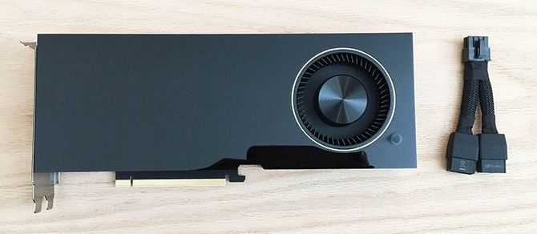
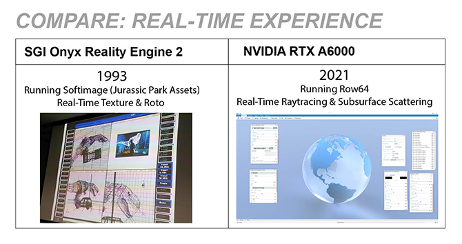
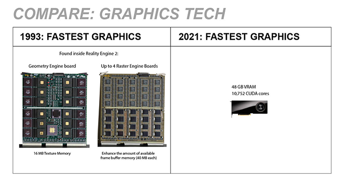
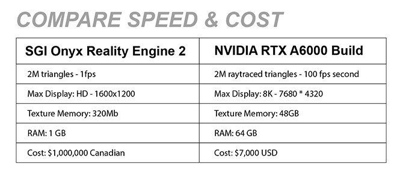
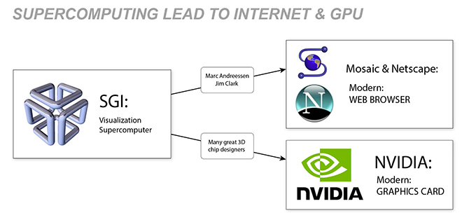
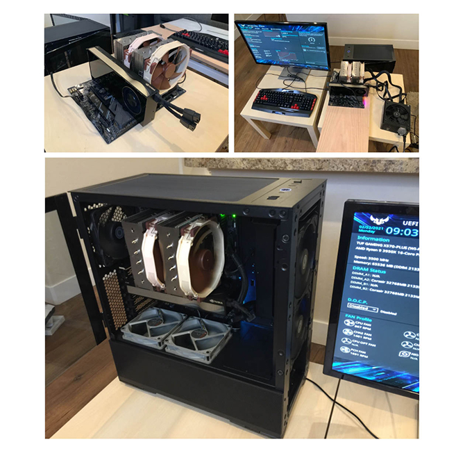

Then Is Now - A6000 Reality Engine

Nvidia released the RTX A6000 in October 2020.
With a mind-blowing 48GB of VRAM and the Ampere architecture, this card is the best combined visualization & compute hardware ever made in human history (at least as of today).
Some may say the A100 is faster - but it doesn’t have raytracing. Some may say the 3090 has 1% faster ray-tracing performance - but it doesn’t have the VRAM scale. The A6000 is really the top card for the frontier of combined visualization and compute at large scales.
Row64 works closely with NVIDIA and is constantly driving towards squeezing every drop of performance we can out of low-level hardware and software. So we were very excited to get ahold of this card.
When it arrived, it was so new that there was no branding on the box… just a plain white box with bubble wrap.
But inside was a RTX A6000!
Pretty exciting I was holding the most powerful graphics card in the world.

It brought back a lot of memories… Back in the summer of 1993 I was an intern working for the Canadian Department of Public Works - inside their Digital Simulation Lab. This was one of the most cutting edge computing visualization research centers in all of Canada. I just got the job by chance, noticing it on the job board at University of Waterloo. That was the last time I had been so close to the top visualization power in the world.
Part of my job was helping purchase a million dollar computer… Who knew a computer could cost a million dollars Canadian? It was going to be used to model the parliament buildings of Canada and visualize new infrastructure phases over time.
The computer itself was called a “SGI Onyx - Reality Engine 2” and cost 500K.

The RAM for the computer cost and additional 500K. There was so much RAM that a different word I had never heard of was used to describe it - a GIG.
We were paying 500K for 1 GIG of RAM. I told all my technical friends about it… everyone had the same response. “What’s a GIG?”
Personally I just did little odd jobs around ordering the purchase. Coordinating the cooling for the room. Making sure the power was setup right. Answering questions about it when my boss was out. When it arrived I was not allowed to touch it or go near it. Only the top senior Graphics Operator could use it…
But out of the corner of my eye I was always watching what was happening on the screen. It was mind blowing.
Basically a 3D world could be navigated in real-time. A textured real world could be manipulated and moved around at 30 frames per second.
To me this was a total shock. I had some friends who did 3D renders on PC back then and they typically took 3 days to a week to render. Here it was happening as though time was nothing. Like the computer could see.

Looking down at this A6000 I could feel that something like this was happening again.
At Row64 we had been coding with real-time raytracing for a while at this point. To me real-time raytracing is the only thing I’ve seen in computer history that had this massive impact like that Reality Engine 2.
Real-time raytracing puts you into a visual world, but one far better then any traditional rasterization technology. It can be up to 2000X faster than CPU raytracing. So it has this same effect of drawing you into this new real-time visual experience.
It’s also interesting to think about how much the graphics hardware has changed but is still kind of the same:

Here’s a link to an interesting deep dive on how graphics hardware has evolved over this 28 year span of time.
In general both are using geometry engines or Graphics Processing layer that passes data to a rasterization layer.
The NVIDIA Ampere architecture however brings in many new core capabilities: CUDA Cores, Tensor Cores, and Ray Tracing Cores to name a few.
Let’s look at the overall value change over this 28 year period:

Clearly time travel forward in time is an outstanding strategy to get incredible graphics performance for a better price.
Note that the RTX speed of raytracing is at the same number of triangles but with raytracing instead of rasterization. A mind-blowing step forward in visualization quality… it’s literally 1000X better. And keep in mind in a single frame in this example the A6000 is sending 8 rays and 16 bounces for every pixel on the screen - at 100fps.
Something interesting happened if you look back the next step of the Reality Engine in history. SGI basically collapsed and the top brains working there went on to change the world of computers. Today’s Supercomputer is tomorrows computer, so people working in supercomputing get an early sense and experience of what the next generation of technology will look like. That’s exactly how the Web Browser & Graphics Card revolutions started.

So there you have it. We’re living in a moment in time that is much like 1993. An incredible new technology – real-time raytracing & compute has shattered the traditional barriers that were slowing down computers. Turning work that took weeks into milli-seconds.
It’s an exciting moment and we can’t wait to see what happens next. What new revolutions in computing will these new capabilities lead to?
On a side note, here at Row64 – we had a great time putting together this A6000 build. We found it interesting to integrate the top data science card with some popular gamer build techniques. For example check out our build with a Noctua NH-D15 CPU Cooler:

It really worked out great and lead to all the insights we’ve put in this article.
If you’re interested in the build details - please check out our article “How to Build Your Own Supercomputer”. Basically the part list is identical just using a A6000 instead of a 3090.
Attribution - Geometry Engine Board:
By Retro-Computing Society of Rhode Island - Own work, CC BY-SA 3.0
Attribution - SGI Onyx2 visualization system: